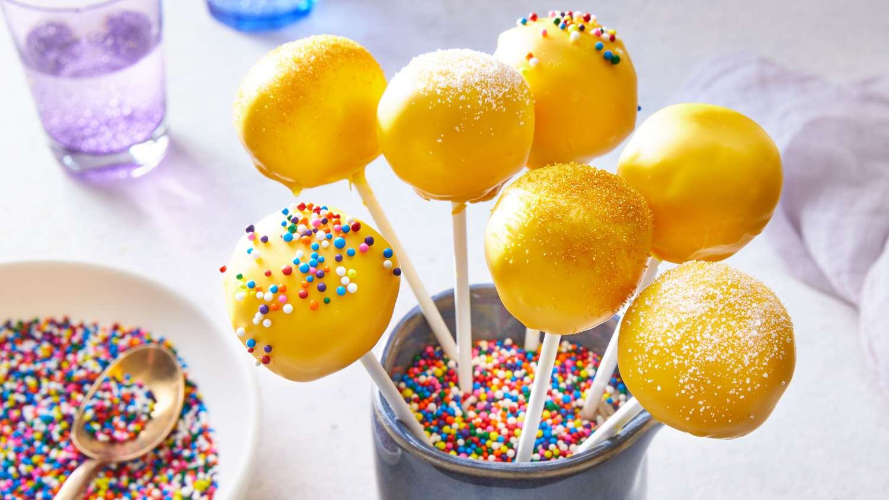

Cake Pops

Ingredients
- One 15.25-ounce box yellow cake mix, plus required ingredients
- 1 cup vanilla frosting, plus more as needed
- 20 ounces white candy melting wafers
- Sprinkles or cookie crumbles, for decorating, optional
Procedure
- Prepare and bake the cake according to the package directions for a 9-by-13-inch pan. Let cool completely.
- Break the cake into pieces and place it in a food processor. Add the frosting and process until the mixture forms a ball and pulls away from the sides of the bowl, about 30 seconds. If the mixture doesn't come together, add more frosting 1 tablespoon at a time until it holds its shape.
- Using a 3/4-ounce scoop, form the mixture into 46 balls and put them on a baking sheet. Refrigerate until firm, about 30 minutes.
- Meanwhile, place the candy wafers in a microwave-safe bowl and melt according to package directions. Dip a half inch of the tip of a lollipop stick into the candy and then stick the tip halfway into a cake ball. Repeat with the remaining balls and sticks. Refrigerate the cake pops until completely chilled, about 1 hour.
- Microwave the candy again until melted and pour it into a tall narrow glass. Dip each cake pop into the candy and let any excess run off. If decorating, turn the cake pop upright and sprinkle with sprinkles while the coating is still wet. Stick the finished pops in two 9.8-by-11.8-inch Styrofoam blocks block and let set completely.